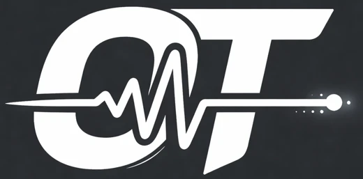
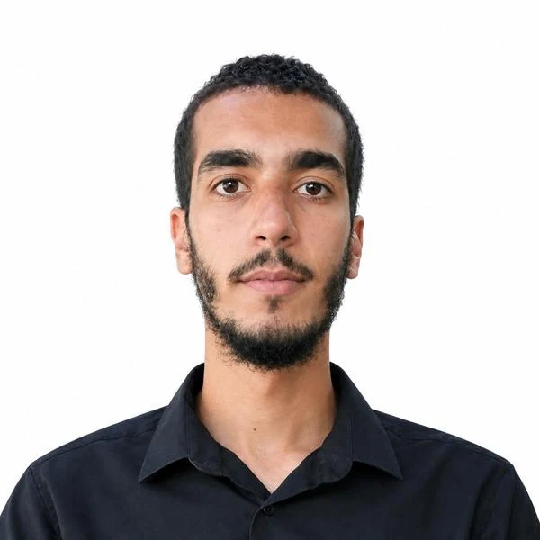
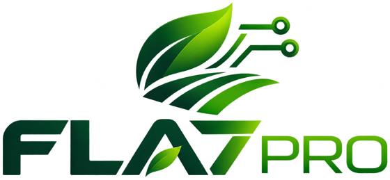
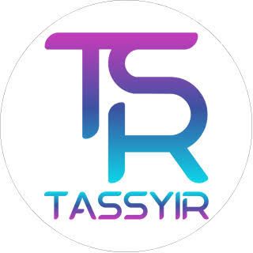

Smart Lighting Control System
AI-powered remote control for home and commercial lighting, with real-time energy optimization and predictive maintenance.
ESP32TensorFlowMQTTReact Native
Code on GitHub
Ahmed Oukali
Ahmed Oukali · Tiaret, AlgeriaEmbedded systems and electronics engineer. Custom hardware, firmware, signal processing and Edge AI, plus the dashboards and SQL data behind them. M.Sc. in Embedded Systems, ranked 1st in Electronics.
I'm a Master 2 graduate in Embedded Systems Engineering (Université Ibn Khaldoun de Tiaret, 2024–2025), based in Tiaret. I build systems where the physical world meets software: custom sensors, low-level firmware, signal processing, and AI that turns raw measurements into decisions.
My strength is treating the sensor, the circuit, the firmware and the AI as one system. I work with Arduino, ESP32, PIC and STM32, and I integrate Edge AI into embedded and electronic products.

Real-time monitoring and autonomous smart irrigation, documented on youtube.com/@FLA7PRO
Irrigation shouldn't depend on one surface reading. This project builds a vertical soil profile so decisions reflect the root zone.
Status: laboratory proof-of-concept (TRL-4 style). Roadmap items are planned, not deployed.
PIC nodes move to STM32 with nRF links, feeding a Raspberry Pi hub with dashboard, AI and camera.
AI-powered remote control for home and commercial lighting, with real-time energy optimization and predictive maintenance.
ESP32TensorFlowMQTTReact Native
Code on GitHubAutonomous navigation and object recognition using ESP32 and machine learning.
ESP32TF LiteOpenCVROS
Code on GitHubInteractive web platform for gaming and puzzles, modern UI and responsive layout.
HTML5CSS3JavaScriptPages
Open siteMulti-layer PCB design in Altium Designer with signal-integrity, EMI/EMC and thermal considerations. Click a render to enlarge.

Tassyir DigitalMaintaining and upgrading industrial systems: PLC version updates and integration, HMI and SCADA development.
AI projects, software development and web-based solutions.
Université Ibn Khaldoun de Tiaret. Ranked 1st in Electronics.
Université Ibn Khaldoun de Tiaret.
5G and IoT solutions, Sidi Abdellah Higher School.
Autonomous drones for agricultural monitoring and delivery.
Smart-city and sustainability solutions.
2026: Chipathon, Track B: Circuits for Sensors (OpenLane, Sky130, Magic, Ngspice). Also: Huawei ICT Competition (regional stage) and the Drought Prediction Hackathon (Sudan).
CC++PythonJavaScriptJavaMATLABAssemblyVHDLVerilog
PIC16F/18FdsPIC33STM32F10xESP32ArduinoRaspberry PiFPGADSP
TensorFlowTF LiteOpenCVKNNMLP / neural netsComputer visionEdge AI
AltiumKiCadProteusNgspiceAnalog conditioningPower electronicsSignal processing
HTML5CSS3JSReact NativeSQLiteSQLMQTT
FreeRTOSEmbedded LinuxGitDockerPLCHMISCADAMPLAB XKeil
RTOS design, embedded C, hardware interfacing, power optimization
Nodes, topics, services, simulation, navigation
OpenCV, object detection, neural networks, visual SLAM
MQTT, CoAP, sensor networks, cloud integration, security
Task management, inter-task communication, memory, debugging
High-speed design, impedance control, signal integrity, manufacturing outputs
Open to work and collaboration on embedded systems, environmental sensing, Edge AI and smart agriculture.